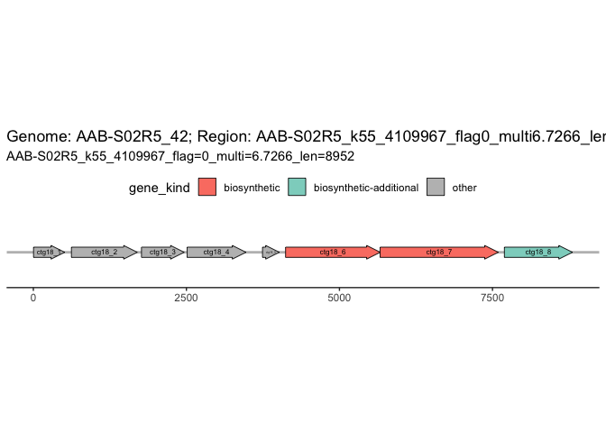
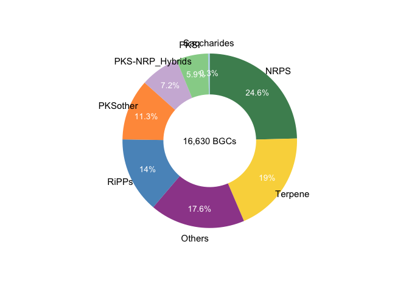
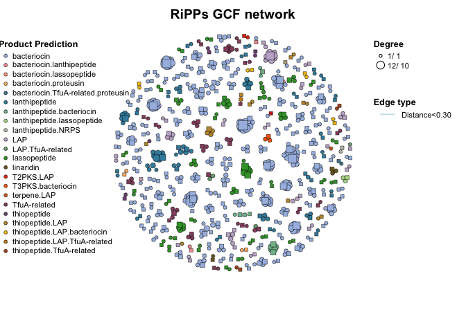

Installation
You can install the development version of BGCkit like so:
# install.packages("devtools")
devtools::install_github("Asa12138/BGCkit")MiBIG database
# get_mibig_db(file = "../temp/mibig_json_4.0.tar.gz")
load_mibig_db() -> mibig_db
mibig_db2df(mibig_db) -> mibig_dfAntismash
how_to_do_bgc("antismash")
read_antismash_json("../temp/AAB-S02R5_42_v7.1.0/AAB-S02R5_42.json") -> AAB_S02R5_42
AAB_S02R5_42
#> Antismash Output Summary:
#> Genome name: AAB-S02R5_42
#> Number of BGCs: 8
#> Version: 7.1.0
get_BGCs_from_BGC_json(AAB_S02R5_42)
#> genome_name id
#> 1 AAB-S02R5_42 AAB-S02R5_k55_4109967_flag0_multi6.7266_len8952
#> 2 AAB-S02R5_42 AAB-S02R5_k55_5485772_flag0_multi4.5880_len2123
#> 3 AAB-S02R5_42 AAB-S02R5_k55_4875950_flag0_multi6.0838_len3658
#> 4 AAB-S02R5_42 AAB-S02R5_k55_2881803_flag0_multi6.5031_len6907
#> 5 AAB-S02R5_42 AAB-S02R5_k55_6300465_flag0_multi6.8636_len7457
#> 6 AAB-S02R5_42 AAB-S02R5_k55_216270_flag1_multi5.9327_len2521
#> 7 AAB-S02R5_42 AAB-S02R5_k55_4015141_flag0_multi5.4879_len6231
#> 8 AAB-S02R5_42 AAB-S02R5_k55_4042629_flag0_multi4.9108_len2130
#> contig region_number
#> 1 AAB-S02R5_k55_4109967_flag=0_multi=6.7266_len=8952 1
#> 2 AAB-S02R5_k55_5485772_flag=0_multi=4.5880_len=2123 1
#> 3 AAB-S02R5_k55_4875950_flag=0_multi=6.0838_len=3658 1
#> 4 AAB-S02R5_k55_2881803_flag=0_multi=6.5031_len=6907 1
#> 5 AAB-S02R5_k55_6300465_flag=0_multi=6.8636_len=7457 1
#> 6 AAB-S02R5_k55_216270_flag=1_multi=5.9327_len=2521 1
#> 7 AAB-S02R5_k55_4015141_flag=0_multi=5.4879_len=6231 1
#> 8 AAB-S02R5_k55_4042629_flag=0_multi=4.9108_len=2130 1
#> on_contig_edge start end direct length product
#> 1 True 1 8952 1 8952 proteusin; RiPP-like
#> 2 True 1 2123 1 2123 terpene
#> 3 True 1 3658 1 3658 RiPP-like
#> 4 True 1 6907 1 6907 redox-cofactor
#> 5 True 1 5328 1 5328 RiPP-like
#> 6 True 1 2521 1 2521 terpene
#> 7 True 596 6231 1 5636 RiPP-like
#> 8 True 1 2130 1 2130 terpene
#> BGC
#> 1 AAB-S02R5_k55_4109967_flag0_multi6.7266_len8952.region001
#> 2 AAB-S02R5_k55_5485772_flag0_multi4.5880_len2123.region001
#> 3 AAB-S02R5_k55_4875950_flag0_multi6.0838_len3658.region001
#> 4 AAB-S02R5_k55_2881803_flag0_multi6.5031_len6907.region001
#> 5 AAB-S02R5_k55_6300465_flag0_multi6.8636_len7457.region001
#> 6 AAB-S02R5_k55_216270_flag1_multi5.9327_len2521.region001
#> 7 AAB-S02R5_k55_4015141_flag0_multi5.4879_len6231.region001
#> 8 AAB-S02R5_k55_4042629_flag0_multi4.9108_len2130.region001
plot_BGC(AAB_S02R5_42, region_id = "AAB-S02R5_k55_4109967_flag0_multi6.7266_len8952.region001")
Big-scape
how_to_do_bgc("big-scape")
read_big_scape_dir("../temp/network_files/2024-05-27_14-21-19_hybrids_glocal/") -> big_scape_res
#> Found 1 networks with different cutoff:
#> 0.30
#> Use the cutoff: 0.30
#> ================================Reading networks================================
#> ==================================Reading GCFs==================================
#> Joining with `by = join_by(GCF)`
#> Some BGCs such as 'AAB-S10R3_263_c00118_AAB-S10...region001' were assigned into
#> different GCFs
#> Reassign them into the GCF with the largest number of BGCs
#> Joining with `by = join_by(BGC)`
#> Some BGC names are in the format of BGCXXXXXXX (from MIBiG database)
big_scape_res
#> BiG-scape Output Summary:
#> Number of BGCs: 16630
#> Cutoff: 0.30
#> BiG-scape Classes: NRPS, Others, PKS-NRP_Hybrids, PKSI, PKSother, RiPPs, Saccharides, Terpene
#> With MIBiG: TRUE
plot_BGC_class(big_scape_res)
trans_net(big_scape_res, class = "RiPPs") -> NRPS_net
#> No 'from' and 'to' in the colnames(edgelist), use the first two columns as the 'from' and 'to'.
plot(NRPS_net,
group_legend_title = "Product Prediction", main = "RiPPs GCF network",
size_legend = T, size_legend_title = "Degree"
)
Big-slice
# read_big_slice_dir("~/Documents/R/Greenland2/data/big_slice_out/")->big_slice_res2
read_big_slice_dir("../temp/big_slice_test_out/") -> big_slice_res
#> Joining with `by = join_by(bgc_id)`
#> Joining with `by = join_by(gcf_id)`
big_slice_res
#> BiG-slice Output Summary:
#> Dir: /Users/asa/Documents/R/BGC_analysis/temp/big_slice_test_out
#> BGCs number: 4
#> With 1 reports:
#> Greenland_MAGs
# open_big_slice_website(big_slice_res,port=123)
get_big_slice_db(big_slice_res, "bgc")
#> id dataset_id name type on_contig_edge
#> 1 1 1 AAB-S01R1_115/c00076_AAB-S01...region001 as5 1
#> 2 2 1 AAB-S01R1_115/c00291_AAB-S01...region001 as5 1
#> 3 3 1 AAB-S01R1_115/c00189_AAB-S01...region001 as5 1
#> 4 4 1 AAB-S01R1_115/c00196_AAB-S01...region001 as5 1
#> length_nt orig_folder orig_filename
#> 1 1528 AAB-S01R1_115 c00076_AAB-S01...region001.gbk
#> 2 2578 AAB-S01R1_115 c00291_AAB-S01...region001.gbk
#> 3 1029 AAB-S01R1_115 c00189_AAB-S01...region001.gbk
#> 4 5330 AAB-S01R1_115 c00196_AAB-S01...region001.gbk
get_report_df(big_slice_res, "Greenland_MAGs")
#> Joining with `by = join_by(bgc_id)`
#> bgc_id name type
#> 1 1 test_query/AAB-S01R1_127_c00915_AAB-S01...region001 as5
#> 2 2 test_query/AAB-S01R1_127_c00921_AAB-S01...region001 as5
#> 3 3 test_query/AAB-S01R1_127_c00197_AAB-S01...region001 as5
#> 4 4 test_query/AAB-S01R1_127_c00519_AAB-S01...region001 as5
#> 5 5 test_query/AAB-S01R1_127_c00586_AAB-S01...region001 as5
#> 6 6 test_query/AAB-S01R1_127_c00102_AAB-S01...region001 as5
#> 7 7 test_query/AAB-S01R1_127_c00437_AAB-S01...region001 as5
#> 8 8 test_query/AAB-S01R1_127_c00276_AAB-S01...region001 as5
#> 9 9 test_query/AAB-S01R1_127_c00355_AAB-S01...region001 as5
#> 10 10 test_query/AAB-S01R1_127_c00212_AAB-S01...region001 as5
#> on_contig_edge length_nt gcf_id distance in_gcf
#> 1 1 3790 GCF_1 1.375247 FALSE
#> 2 1 5018 GCF_1 1.375247 FALSE
#> 3 1 8284 GCF_3 1.198277 FALSE
#> 4 1 1584 GCF_1 1.375247 FALSE
#> 5 1 1701 GCF_1 1.375247 FALSE
#> 6 1 14587 GCF_1 1.375247 FALSE
#> 7 1 3371 GCF_1 1.375247 FALSE
#> 8 1 4403 GCF_3 1.326082 FALSE
#> 9 1 3075 GCF_1 1.375247 FALSE
#> 10 1 5435 GCF_1 1.375247 FALSE